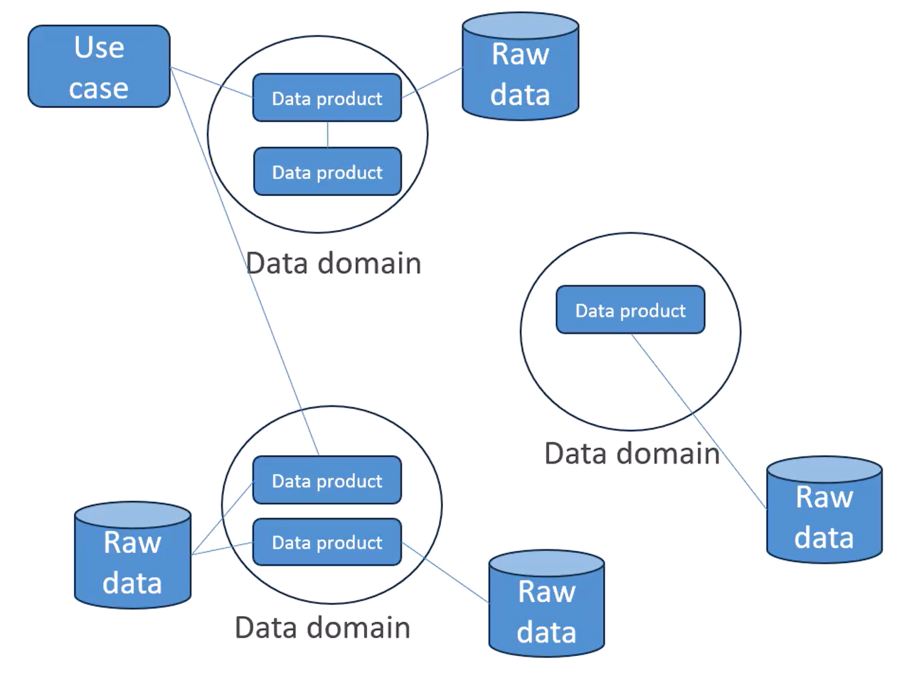
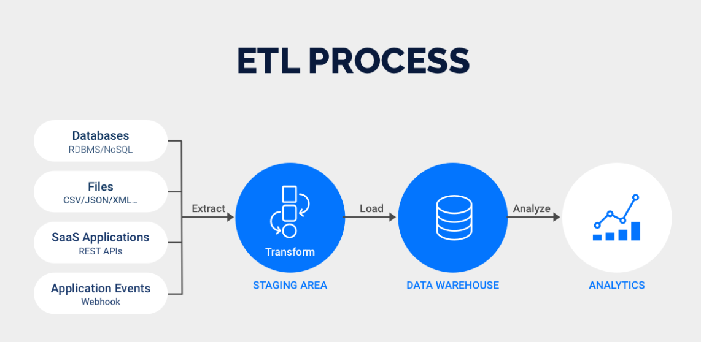
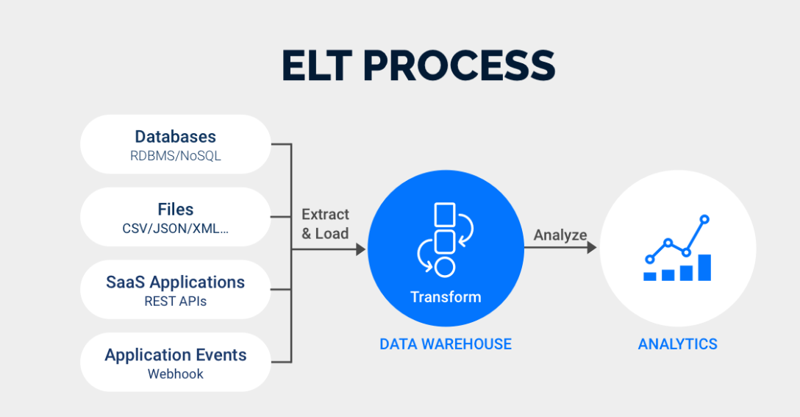

AWS DEA-C01 certification
EXAM CONTENT
The AWS Certified Data Engineer - Associate (DEA-C01) exam has a pass or fail designation. The exam is scored against a minimum standard established by AWS professionals who follow certification industry best practices and guidelines. Your results for the exam are reported as a scaled score of 100–1,000. The minimum passing score is 720 from 50 questions along with 15 unscored questions.
- Domain 1: Data Ingestion and Transformation (34% of scored content)
- Domain 2: Data Store Management (26% of scored content)
- Domain 3: Data Operations and Support (22% of scored content)
- Domain 4: Data Security and Governance (18% of scored content)
AWS-Certified-Data-Engineer-Associate_Exam-Guide
Data Engineering Fundamentals
Types of Data
Structured Data
Data is organized in a defined manner (rows and columns of well-defined data) or schema found in RDS.
Characteristics:
1 2 3 | |
Examples:
1 2 3 | |
UnStructured Data
Data is does not have a predifined structured or schema.
Characteristics:
1 2 3 | |
Examples:
1 2 | |
Semi-Structured Data
Data is not as organized or structured but does have some structure in form of tags,patterns,hierarchies. Structure is in there but not consistent throughout the data
Characteristics:
1 2 3 | |
Examples:
1 | |
Properties of Data
| Characteristic | Description |
|---|---|
| Volume | Refers to the vast amounts of data generated every second. Big data involves large volumes of data. |
| Variety | Refers to the different types of data (structured, semi-structured, unstructured) from various sources. |
| Velocity | Refers to the speed at which data is generated, processed, and analyzed. |
| Veracity | Refers to the accuracy and trustworthiness of the data. |
| Value | Refers to the worth of the data being collected and how it can be turned into valuable insights. |
| Variability | Refers to the inconsistency of the data, which can affect processes that handle and manage it. |
data warehouse vs data lake vs data lakehouse
- Data Warehouse: Best for structured data and complex queries with strong data governance.
- Data Lake: Best for storing vast amounts of diverse data for big data analytics and machine learning.
- Data Lakehouse: Combines the benefits of both, providing a unified platform for diverse data types, with the performance and governance of data warehouses and the scalability and flexibility of data lakes.
| Feature | Data Warehouse | Data Lake | Data Lakehouse |
|---|---|---|---|
| Definition | Centralized repository for structured data | Centralized repository for structured, semi-structured, and unstructured data | Unified platform combining features of data lakes and data warehouses |
| Data Type | Structured data | Structured, semi-structured, and unstructured data | Structured, semi-structured, and unstructured data |
| Schema | Schema-on-write | Schema-on-read | Supports both schema-on-write and schema-on-read |
| Data Processing | Batch processing | Batch and real-time processing | Batch and real-time processing |
| Storage Cost | Typically higher | Typically lower | Intermediate, leveraging cost-effective storage of data lakes and performance of warehouses |
| Performance | High performance for complex queries | Variable performance depending on the workload | High performance for complex queries |
| Data Governance | Strong data governance and management | Varies, can be less structured | Enhanced data governance combining both approaches |
| Use Cases | Business intelligence, reporting, and data analysis | Big data analytics, machine learning, and data exploration | Business intelligence, advanced analytics, and machine learning |
| Accessibility | SQL-based tools and BI platforms | Diverse tools (e.g., Hadoop, Spark) | SQL-based tools, BI platforms, and big data tools |
| Scalability | Scalable but may require more resources to scale | Highly scalable with distributed storage systems | Highly scalable leveraging both distributed storage and computing |
| Data Update | Handles updates and transactions efficiently | Less efficient at handling updates and transactions | Efficient handling of updates and transactions |
| Compliance | Easier to enforce compliance and security policies | Harder to enforce due to diverse data formats | Enhanced compliance with unified security model |
| Examples | Amazon Redshift, Google BigQuery, Snowflake | Hadoop HDFS, Amazon S3, Azure Data Lake Storage | Databricks Lakehouse, Snowflake, Amazon Redshift Spectrum |
Data Mesh
It is a decentralized data architecture paradigm that addresses the challenges of scalability and ownership in modern data ecosystems by shifting from a centralized data lake or data warehouse approach to a distributed data mesh approach. It focuses on treating data as a product and emphasizes domain-oriented ownership.

ETL/ ELT Pipelines
-
ETL, which stands for Extract, Transform, and Load, involves transforming data on a separate processing server before transferring it to the data warehouse.
-
ELT, on the other hand, or Extract, Load, and Transform, performs data transformations directly within the data warehouse itself. Unlike ETL, ELT allows for raw data to be sent directly to the data warehouse, eliminating the need for staging processes.  
Data Sources
- JDBC
- ODBC
- Raw Logs
- API's
- Streams
Common Data Formats
- CSV (structured) systems[RDS(sql based),R, ETL , pandas]
- JSON (semi-structured) systems[Nosql, Restful APIs]
- AVRO (Binary Format stores both data and schema) systems[Kafka, spark, flink, hadoop]
- Parquet (columnar storage) systems[hadoop, spark, hive, impala, redshift spectrum]
Data Modeling
More techniques add from Data Models
- Star Schema (Fact table, dimension tables)
- Snowflake Schema(extension of star schema adds sub-dimensions for dimension tables creates less normalization but easy for analysts to query)
- Data Vault(Satillete, hubs, links)
One Big Table
- Concept: Combines all data into a single, wide table.
- Pros: Simple design, easy to query.
- Cons: Poor performance on large datasets, difficult to maintain and scale, high redundancy.
Kimball
- oncept: Uses a star schema with fact and dimension tables.
- Pros: Optimized for read performance, suitable for OLAP systems, relatively easy to understand and use.
- Cons: Some redundancy, more difficult to maintain data integrity compared to normalized models.
Inmon
- Concept: Uses a normalized 3NF data model.
- Pros: High data integrity, reduced redundancy, suitable for OLTP systems.
- Cons: Complex queries, can be slower due to multiple joins, requires careful design and management.
Data Vault
- Concept: Uses a hybrid approach with hubs (unique business keys), links (relationships), and satellites (contextual data).
- Pros: Highly scalable, flexible, supports historical data tracking, good for complex data integration.
- Cons: Requires understanding of Data Vault methodology, can be complex to implement and manage.
Data Lineage
Data Lineage refers to the life cycle of data, including its origins, movements, transformations, and destinations. It is crucial for understanding how data flows through an organization, ensuring accuracy, and maintaining compliance.
Importance of Data Lineage
- Data Quality: Ensures data is accurate and reliable by tracking its transformation and movement.
- Compliance: Helps meet regulatory requirements by providing a clear audit trail.
- Troubleshooting: Aids in identifying and resolving data issues by understanding data flow.
- Impact Analysis: Assesses the potential impact of changes in data sources or processes.
Schema Evaluation
Schema Design Principles
- Understand Business Requirements: Know the data requirements, query patterns, and performance needs.
- Data Modeling: Create logical and physical data models to represent the schema.
- Choose the Right Data Types: Select appropriate data types for each column to optimize storage and performance.
- Normalization vs. Denormalization: Balance normalization to reduce redundancy and denormalization to improve query performance.
- Indexing: Create indexes to speed up data retrieval but be mindful of the impact on write operations.
- Partitioning: Use partitioning to divide large tables into smaller, manageable pieces to improve query performance and manageability.
- Documentation: Document the schema design to ensure clarity and ease of maintenance. Best Practices for Schema Evaluation
- Evaluate Query Performance: Regularly analyze and optimize query performance.
- Monitor and Tune: Continuously monitor database performance and make necessary adjustments.
- Use Schema Management Tools: Leverage tools like AWS Glue Data Catalog and Amazon RDS Performance Insights for schema management and performance tuning.
- Implement Data Governance: Ensure data governance practices are in place to maintain data quality and compliance.
Data Optimization Techniques
Data Optimization Overview
Data Optimization refers to the processes and techniques used to improve the performance and efficiency of data systems, including storage, retrieval, and processing. This ensures that data operations are fast, cost-effective, and scalable.
Key Optimization Techniques
- Indexing: Creating indexes on columns to speed up data retrieval operations.
- Partitioning: Dividing large tables into smaller, more manageable pieces to improve query performance and manageability.
- Compression: Reducing the size of data stored to save storage space and improve I/O performance.
- Caching: Storing frequently accessed data in a faster storage layer to reduce access times.
- Query Optimization: Analyzing and rewriting queries to make them more efficient.
- Concurrency Control: Managing concurrent data operations to ensure consistency and performance.
- Data Archiving: Moving infrequently accessed data to cheaper, long-term storage solutions.
- Data Cleaning: Removing errors and inconsistencies to improve data quality and processing efficiency.
AWS Services for Data Optimization
- Amazon Redshift:
- Distribution Styles: Choose the right distribution key to optimize data distribution and query performance.
- Sort Keys: Use sort keys to speed up query performance by reducing the amount of data scanned.
- Compression: Apply columnar storage and compression to reduce storage space and I/O.
- Concurrency Scaling: Automatically adds query processing power to handle high demand.
-
Materialized Views: Precompute and store query results to speed up complex queries.
-
Amazon RDS (Relational Database Service):
- Indexes: Create indexes to speed up data retrieval operations.
- Read Replicas: Use read replicas to offload read traffic and improve performance.
- Partitioning: Implement partitioning strategies to manage large tables and improve query performance.
-
Performance Insights: Monitor database performance and optimize queries and indexes.
-
Amazon DynamoDB:
- Provisioned and On-Demand Capacity: Optimize read and write capacity settings based on workload.
- Global and Local Secondary Indexes: Create indexes to optimize query performance.
- DAX (DynamoDB Accelerator): Use DAX to cache read operations and improve performance.
-
Adaptive Capacity: Automatically adjusts throughput capacity to handle uneven data distribution.
-
Amazon S3:
- Storage Classes: Use different storage classes (e.g., S3 Standard, S3 Intelligent-Tiering, S3 Glacier) to optimize cost and performance.
- Object Lifecycle Policies: Implement lifecycle policies to automatically move data to appropriate storage classes.
-
S3 Select: Use S3 Select to retrieve only the necessary data from objects, reducing data transfer and processing.
-
AWS Glue:
- ETL Optimization: Optimize ETL jobs by tuning memory, worker type, and concurrency settings.
- Dynamic Frames: Use dynamic frames for schema inference and data transformation optimizations.
-
Job Bookmarks: Track processing states to incrementally process data and avoid redundant work.
-
Amazon Athena:
- Partitioning: Partition data in Amazon S3 to improve query performance.
- Compression: Store data in compressed formats (e.g., Parquet, ORC) to reduce scan times and costs.
- Presto Optimizations: Utilize Presto-specific optimizations for query performance.
Best Practices for Data Optimization
- Understand Workload Patterns: Analyze access patterns and workload characteristics to choose the right optimization techniques.
- Monitor Performance: Continuously monitor system performance using tools like Amazon CloudWatch, AWS CloudTrail, and service-specific monitoring tools.
- Use Appropriate Data Formats: Choose efficient data formats (e.g., Parquet, ORC) for storage and processing.
- Automate Scaling: Use auto-scaling features to adjust resources based on demand.
- Optimize Queries: Regularly review and optimize SQL queries and other data access methods.
- Apply Compression: Use data compression to reduce storage costs and improve I/O performance.
- Leverage Caching: Implement caching strategies to reduce latency and improve performance for frequently accessed data.
Data Sampling Techniques
- Random Sampling (just random)
- Stratified Sampling (even representation from sample datasets)
- systemic Sampling (impose systemic rule for entire dataset)
Data Skew Mechanisms
- Data skew occurs when unequal distribution or imbalance of data across partitions or nodes in distributed clusters.
- can be understand through "The celebrity Problem"
- Causes:
- Non-uniform distribution of data
- Inedequate partitioning strategy
- Temporal Skew (eg.,recent dates have more data than old dates)
- Techniques: More techniques add from Spark ,SQL optimization
- Adaptive partitioning
- Salting
- Sampling
- Repartioning
- Custom Partitioning
Data Validation and Profiling
- Completeness Ensuring all required data fields are populated and no critical data is missing.
- Consistency Ensuring data is uniform and follows the same format and rules across datasets.
- Accuracy Ensuring data is correct and free from errors, reflecting the true values.
- Integrity Ensuring data relationships and constraints (e.g., foreign keys) are correctly maintained, ensuring data is logically coherent.